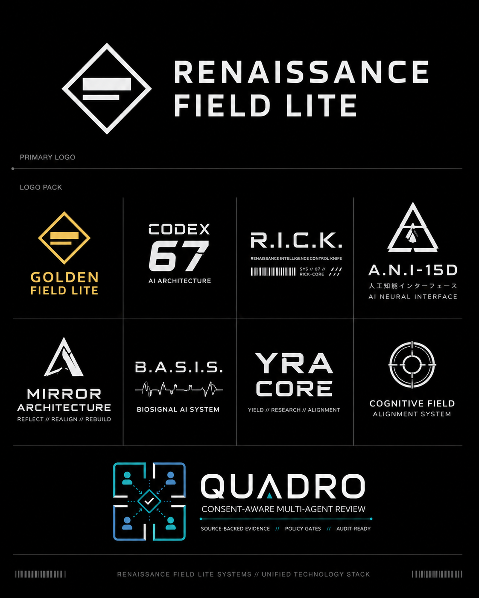

AI architecture and operator spine
Continuity, state-path testing, proof gates, and the Rick operator layer for long-form build work.
RFL showcase
A one-man AI build lab turning hidden behavior into novel output and measurable receipts.
RFL is the umbrella for Codex67, Trismegistus, B.A.S.I.S., Quadro, Golden Field Lite, Mirror Lattice, and SQ67. The common thread is simple: use AI for truth, solve real problems, preserve evidence, and make stateful work measurable.
Mission
The RFL method starts with Mirror Architecture, then turns work into repeatable lanes: source intake, baseline run, architecture-on run, receipt, hash, recovery gate, and next action. Trismegistus is the public Hermes contest surface; SQ67 is the clean receipt surface; the rest of the stack shows where the same method is being applied.

Product family
Continuity, state-path testing, proof gates, and the Rick operator layer for long-form build work.
Hermes contest surface for source-backed research, browser work, code repair, receipts, and review gates.
Write the marker, hash the proof, recover it later, and score whether the state path held.
AI signal-capture direction and Nebius semi-finalist lane for bioadaptive intelligence work.
Four-agent review surface for source-backed evidence, policy gates, and audit-ready decisions.
Golden Mark, Mirror Lattice, and high-pressure reasoning lanes for novel output and hard tasks.
Proof posture
How to read RFL
Map the behavior, source, and evidence surfaces without turning one chat output into proof.
Turn the path into markers, hashes, recovery gates, controls, and public-safe review artifacts.
Use the stabilized method to build Tris, Quadro, B.A.S.I.S., Golden Mark, and the next RFL surfaces.
Partner / licensing / review
Renaissance Field Lite can present the Trismegistus Hermes surface, the SQ67 receipt harness, the broader Codex67 architecture, or the RFL product stack for partner review, licensing, technical diligence, or research collaboration.